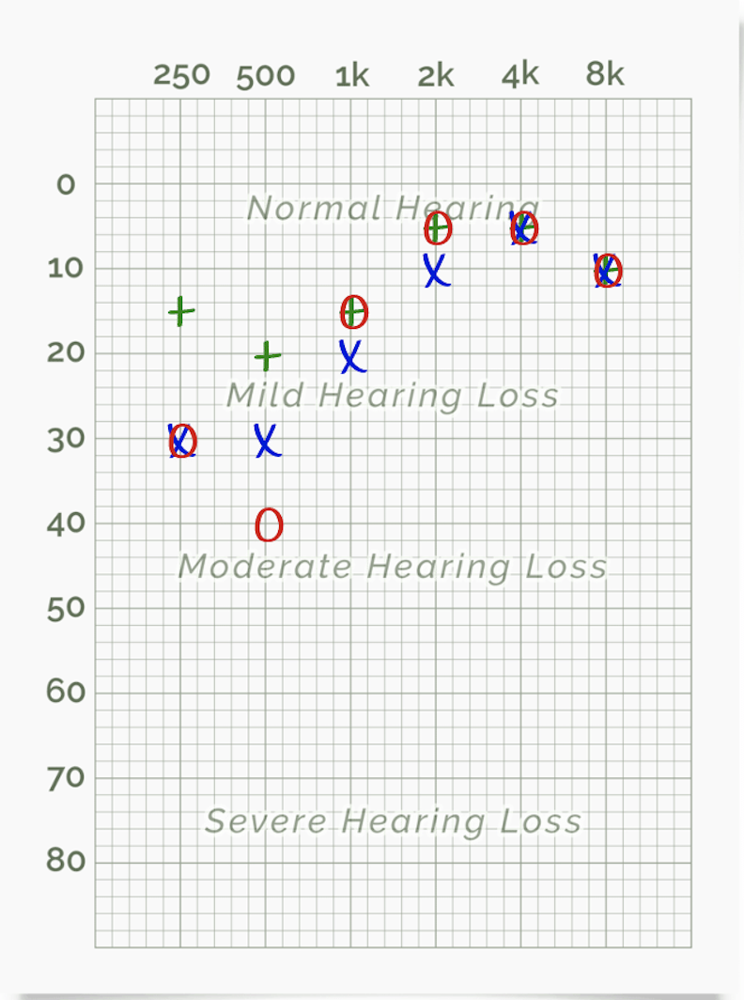
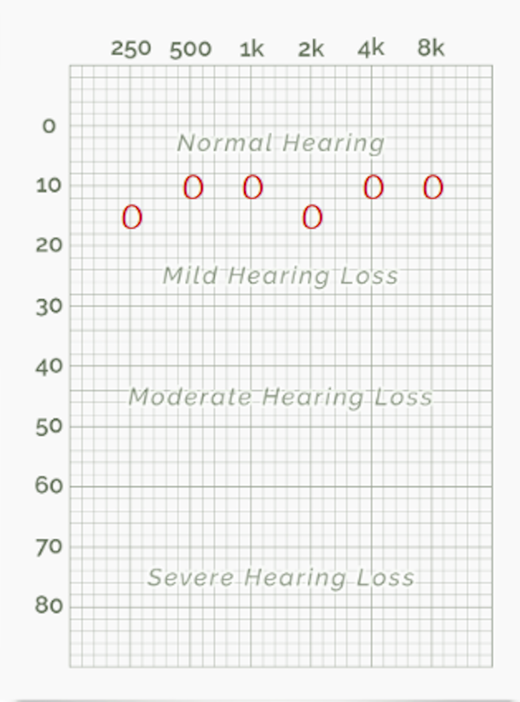
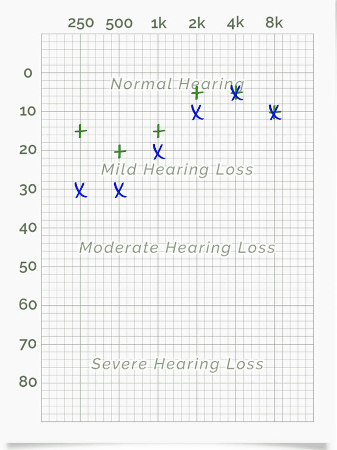
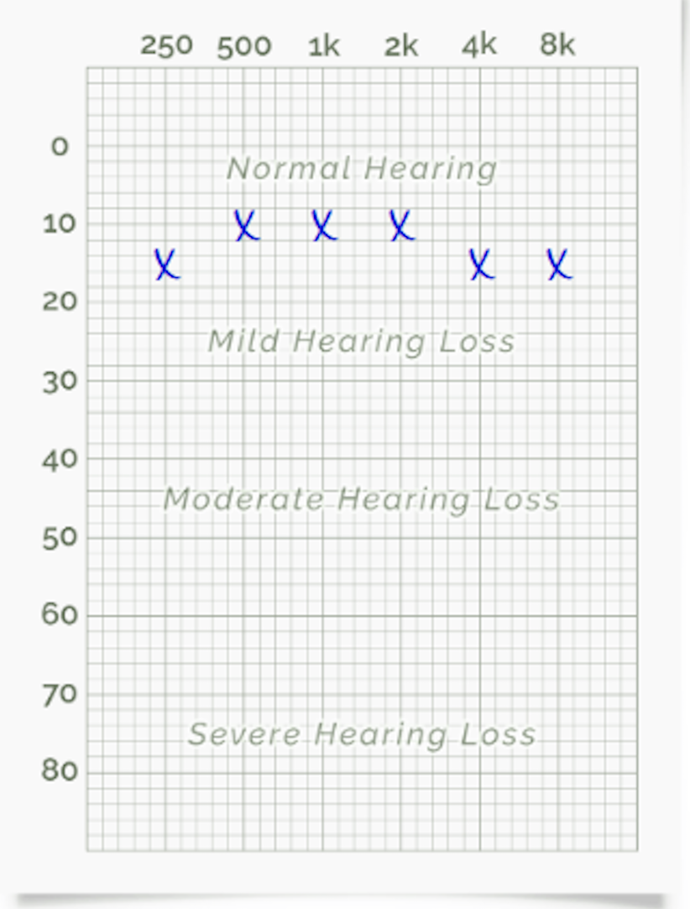
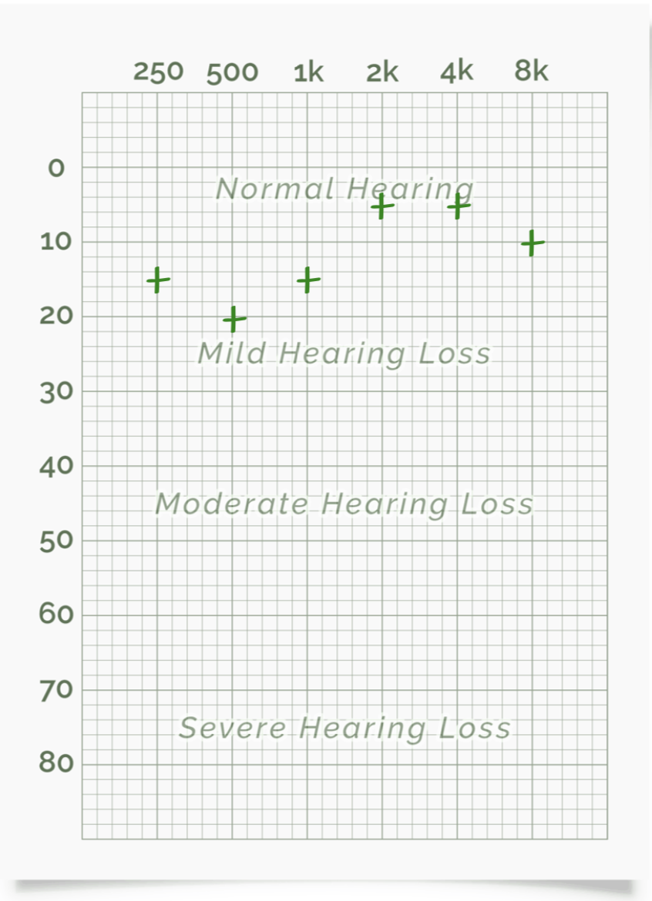
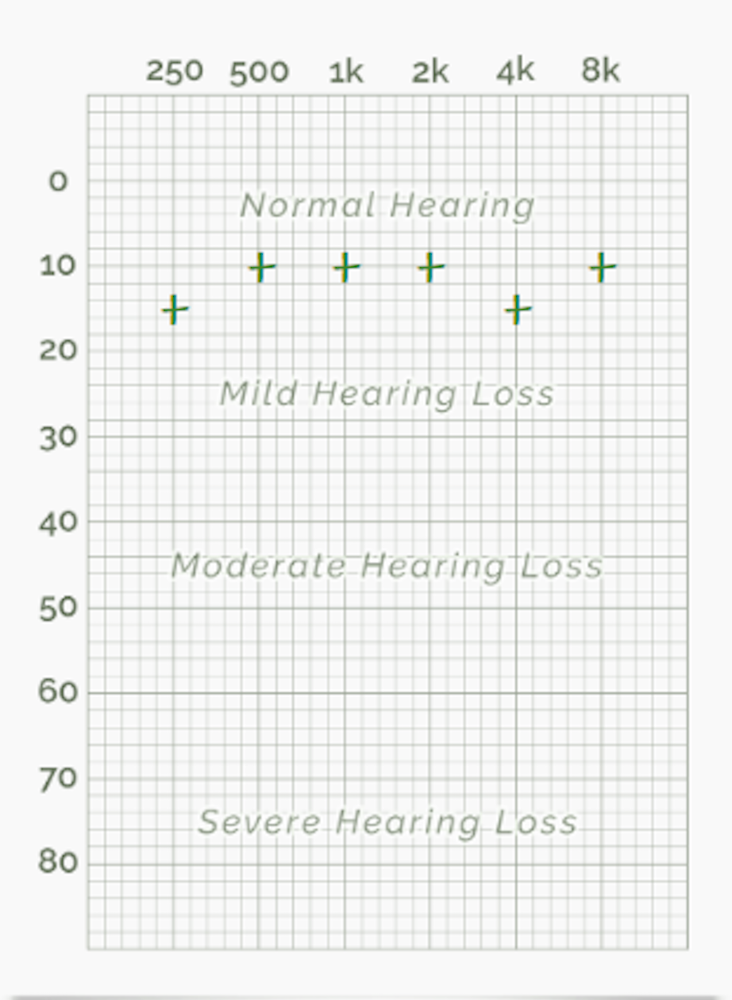

Processamento Multimídia Laboratório Percepção Auditiva
| Hiro | Raphael |
|---|---|
|  |  |
| Hiro | Raphael |
|---|---|
|  |  |
| Hiro | Raphael |
|---|---|
|  |  |
| Primeiro Teste | Segundo Teste | Terceiro Teste | ||||||
|---|---|---|---|---|---|---|---|---|
| Mínimo | Máximo | Mínimo | Máximo | Mínimo | Máximo | |||
| Hiro | 30 | 15000 | 27 | 15700 | 27 | 15500 | ||
PERCEPÇÃO E REPRESENTAÇÃO VETORIAL DE TIMBRE